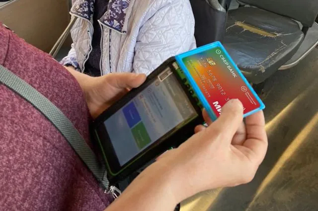

Argumenty i Fakty
Банковская карта как единый проездной

Независимая публикация о безналичной оплате проезда.
Моя роль
Руководство транспортным платёжным процессингом: приоритизация, roadmap, разработка, релизы и масштабирование.
Открыть оригинал ↗